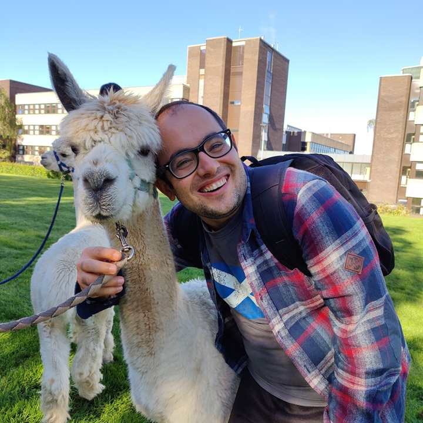

I hold a PhD in Computer Science from Heriot-Watt University, Edinburgh. Bridging the gap between theoretical machine learning models and real-world deployment, my research addresses a fundamental challenge in cyber-physical security: the lack of generalisable models for device identification and intrusion detection.
I am actively seeking Postdoctoral Research positions and joint academic initiatives in IoT security, applied ML, network forensics, and data-driven systems. I am especially interested in labs valuing rigorous empirical validation combined with real-world deployment.
My doctoral thesis, “Behaviour-based Security with Machine Learning on IoT Networks,” (Supervisors: Dr. Mike Just & Dr. Michael Lones) systematically demonstrated how conventional feature representations hinder model generalisation.
To solve this, I developed novel frameworks—IoTDevID, GeMID, and IoTGeM—explicitly designed to remain robust across unseen devices and changing network conditions. This research has been published in high-impact top-tier venues:
Huawei R&D (Edinburgh): During my PhD, I worked as a Researcher at the Huawei UK R&D Centre. I developed ML solutions for community detection and WiFi-based distance estimation, strengthening my ability to build industry-scale systems. Prior to this, my team won 1st place in the Huawei UK University Challenge (2021) for our work on indoor localisation, which we later published at the prestigious IEEE IPIN conference.
Large-Scale Technical Leadership (Current Role): Since September 2024, I have been serving as a National Education Expert at the Directorate General of Higher Education and Overseas Education (YYEGM). In this capacity, I act as the Technical Lead and Architect for the “Ülkem Yanımda” international platform. I coordinated the technical infrastructure design and deployment connecting 100+ teachers with 2000+ students across 10+ countries.
I hold an MSc in Computer Networks and Security (Distinction) from the University of Essex. My interdisciplinary background, including degrees in Computer Education (Marmara Univ.) and Literature, informs my keen interest in explainable AI, natural language reasoning, and research communication.
Outside the lab, I am passionate about Turkish literature, etymology, classical poetry, hiking, and photography.
Our (with RYK) paper "GeMID: Generalizable Models for IoT Device Identification" has been accepted for publication in the Elsevier Internet of Things journal.
Our (with RYK) paper "Graph-Based Floor Separation Using Node Embeddings and Clustering of WiFi Trajectories" has been accepted to the IPIN 2025 conference.
@inproceedings{kostas2026externally,
title={Externally Validating the IoTDevID Device Identification Methodology},
author={Kostas, Kahraman and Just, Mike and Lones, Michael A.},
booktitle={18th International Conference on Security of Information and Networks (SINCONF 2026)},
year={2026}
}
@inproceedings{kostas2026cnn,
title={CNN-based IoT Device Identification: A Comparative Study on Payload vs. Fingerprint},
author={Kostas, Kahraman},
booktitle={6th International Artificial Intelligence and Data Science Congress},
year={2026}
}
@inproceedings{yilmaz2026silly,
title={There Are No Silly Questions: Evaluation of Offline LLM Capabilities from a Turkish Perspective},
author={Y{\i}lmaz, Edibe and Kostas, Kahraman},
booktitle={6th International Artificial Intelligence and Data Science Congress},
year={2026}
}
@inproceedings{canci2026measuring,
title={Measuring Logical Reasoning in Turkish Offline Language Models via Fallacy Detection},
author={Canci, {\.I}nan{\c{c}} Feridun and Shahbazov, Zeynep Gizem Emir and Y{\i}lmaz, Edibe and Kostas, Kahraman},
booktitle={6th International Artificial Intelligence and Data Science Congress},
year={2026}
}
@article{kostas2025gemid,
title={GeMID: Generalizable Models for IoT Device Identification},
author={Kostas, Kahraman and Yasa Kostas, Rabia and Just, Mike and Lones, Michael A.},
journal={Internet of Things},
volume={30},
pages={101806},
year={2025},
publisher={Elsevier},
doi={10.1016/j.iot.2025.101806}
}
@article{kostas2025iotgem,
title={IoTGeM: Generalisable Models for Behaviour-Based IoT Attack Detection},
author={Kostas, Kahraman and Just, Mike and Lones, Michael A.},
journal={Computer Networks},
volume={262},
pages={111550},
year={2025},
publisher={Elsevier},
doi={10.1016/j.comnet.2025.111550}
}
@article{kostas2025individual,
title={Individual Packet Features are a Risk to Model Generalisation in ML-Based Intrusion Detection},
author={Kostas, Kahraman and Just, Mike and Lones, Michael A.},
journal={IEEE Networking Letters},
year={2025},
publisher={IEEE},
doi={10.1109/LNET.2025.3526189}
}
@article{yasakostas2024semantic,
title={Semantic verbal fluency in native speakers of Turkish: A systematic review of category use, scoring metrics and normative data in healthy individuals},
author={Yasa Kostas, Rabia and Kostas, Kahraman and MacPherson, Sarah E. and Wolters, Maria K.},
journal={Journal of Clinical and Experimental Neuropsychology},
volume={46},
number={4},
pages={319--336},
year={2024},
publisher={Taylor \& Francis},
doi={10.1080/13803395.2024.2331827}
}